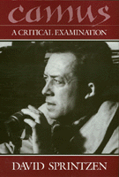

A comprehensive analysis in English of the thought of Albert Camus from a philosophical perspective
A comprehensive analysis in English of the thought of Albert Camus from a philosophical perspective


 A comprehensive analysis in English of the thought of Albert Camus from a philosophical perspective
A comprehensive analysis in English of the thought of Albert Camus from a philosophical perspective

|  |
CamusA Critical ExaminationDavid Sprintzenpaper EAN: 978-0-87722-827-1 (ISBN: 0-87722-827-2) |
"I am indebted to David Sprintzen for his scholarly, detailed, reflective treatment of one of the more important philosophers of this century."
—Robert E. Lauder, Canadian Philosophical Review
Throughout his life, Albert Camus confronted the central dramas of our civilization: the existential anxiety over "the death of God" and the absurdity of human existence; the political struggles over social injustice, capital punishment, and national liberation; and the international focus on nuclear annihilation, violations of human rights, and torture. Addressing the West at its metaphysical and mythic roots, Camus sought to diagnose the interior forces that seemed to propel humanity toward self-destruction. David Sprintzen offers the first original and comprehensive analysis in English of the thought of Albert Camus from a philosophical perspective. Previous literary and psychoanalytical studies have presented Camus’s life and works biographically, but philosophers have neither taken his thought seriously nor examined his work as a whole. With analytical precision and philosophical depth, Sprintzen confronts a corpus whose contemporary resonances as well as Greco-Roman and Judeo-Christian origins dramatize the metaphysical foundations of Western experience.
In this seventy-fifth anniversary of the philosopher’s birth, Camus: A Critical Examination shows how his analysis of political action offers a radical and nondogmatic perspective from which contemporary struggles can gain significant illumination.
"Camus enthusiasts will find a great deal to reminisce about, in this detailed presentation written by an admiring advocate of Camus's positions, articulate and unflinching even when these are ambiguous, incoherent, or simply remote and relevant only in the narrow context of Camus's dated quarrels with personal adversaries."
—French Review
"Sprintzen's book is a splendid invitation to join in an intense dialogue concerning human existence and the turbulent civilization in which Camus and his readers raise and attempt to answer questions. The synoptic analysis and delicate care which Sprintzen gives to virtually every important work of Camus show not only his master of Camus' literary corpus, but his determination to understand Camus' entire project.... I recommend it with enthusiasm."
—Ronald E. Santoni, Denison University
"The book should certainly find its place in all college and university libraries as a profound study of the 'trauma of civilization' as we know it."
—Choice
"An impressive work. Sprintzen offers a comprehensive study of Camus’ philosophical development, but even more, he provides an insightful reading into the depth and incisiveness of Camus’s thought.... A valuable contribution."
—Hugh J. Silverman, SUNY, Stony Brook
Preface
Acknowledgments
Part I: Introduction
1. Experiential Sources
2. The Death of God
Part II: Dramatic Contours
3. The Stranger
4. The Myth of Sisyphus
5. Caligula
Part III: Confrontation and Struggle
6. Social Dislocations
7. Society and Rebellion
8. Revolt and History
9. Metaphysical Rebellion
10. Confronting Modernity
11. The Fall
Part IV: Visions and Possibilities
12. The Witness of Liberty
13. Searching for a Style of Life
14. Concluding in a Dialogic Mode
Notes
Bibliography
Index
David Sprintzen is Professor of Philosophy at C.W. Post College of Long Island University.
Philosophy and Ethics
General Interest
© 2015 Temple University. All Rights Reserved. This page: http://www.temple.edu/tempress/titles/560_reg.html.